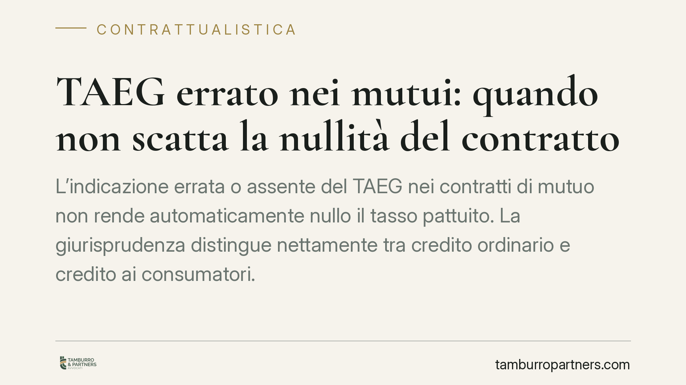

TAEG errato nei mutui: quando non scatta la nullità del contratto
L'indicazione errata o assente del TAEG nei contratti di mutuo non rende automaticamente nullo il tasso pattuito. La giurisprudenza distingue nettamente tra credito ordinario e credito ai consumatori. Per imprese e professionisti la contestazione passa dal risarcimento del danno, con onere probatorio tutto a carico del cliente. Una differenza che cambia la strategia difensiva.

Il fatto
Il TAEG (Tasso Annuo Effettivo Globale), chiamato ISC nei rapporti bancari (Indicatore Sintetico di Costo), è il parametro che esprime il costo complessivo del finanziamento: non solo gli interessi, ma anche spese, commissioni e oneri accessori. Serve al cliente per confrontare le offerte e capire quanto paga davvero.
Accade spesso che il valore indicato in contratto sia errato, incompleto o del tutto omesso. Da qui la domanda ricorrente nel contenzioso bancario: un TAEG sbagliato rende nullo il tasso di interesse pattuito? La Corte di Cassazione ha chiarito che la risposta è no, salvo un'eccezione precisa.
Inquadramento normativo
La disciplina si regge su due norme del Testo Unico Bancario (TUB). L'art. 117 TUB governa la trasparenza dei contratti bancari in generale: prevede la forma scritta e la nullità delle clausole che rinviano agli usi o che sono meno favorevoli di quelle pubblicizzate. Ma il TAEG non rientra tra gli elementi la cui mancanza determina, di per sé, la nullità del tasso. In caso di nullità, l'art. 117 dispone la sostituzione automatica con i tassi legali di riferimento.
L'art. 125-bis TUB riguarda invece il solo credito ai consumatori, cioè i finanziamenti concessi a persone fisiche per scopi estranei all'attività imprenditoriale o professionale. Qui la tutela è più forte: l'assenza o l'erroneità del TAEG può comportare la sostituzione del tasso con un parametro legale ridotto, con effetti economici rilevanti a favore del cliente.
La linea della Cassazione è quindi netta: fuori dal perimetro del consumatore, un TAEG errato non travolge il tasso contrattuale. Resta un inadempimento informativo della banca, ma non una nullità automatica.
Implicazioni pratiche
La distinzione tra le due norme non è formale: determina la tutela concretamente azionabile.
Per il consumatore (mutuo per la prima casa, prestito personale, credito al consumo) la contestazione del TAEG può portare, nei casi previsti, alla riduzione del costo del finanziamento tramite la sostituzione del tasso.
Per imprese, professionisti e partite IVA il discorso cambia. Il TAEG errato nel mutuo stipulato per esigenze d'impresa non genera nullità del tasso né ricalcolo automatico. La strada percorribile è l'azione di risarcimento del danno per violazione degli obblighi di trasparenza. Ma qui l'onere della prova grava interamente sul cliente: non basta dimostrare che il TAEG era sbagliato, occorre provare il danno concreto subìto e il nesso con l'informazione errata. Dimostrare, ad esempio, che si sarebbe scelto un altro finanziatore a condizioni migliori è spesso complesso.
In sintesi: il consumatore ha una tutela "forte" e quasi automatica; l'impresa ha una tutela "debole" e tutta da costruire sul piano probatorio.
Cosa fare in concreto
- Verificate la natura del rapporto. Accertate se il mutuo rientra nel credito ai consumatori (scopo privato, persona fisica) o nel credito ordinario d'impresa: da questo dipende l'intera strategia.
- Recuperate la documentazione completa. Procuratevi il contratto, il piano di ammortamento e il documento di sintesi che riporta TAEG/ISC, per confrontare il valore dichiarato con quello effettivo.
- Fate ricalcolare il TAEG da un tecnico. Una perizia econometrica di parte serve a quantificare lo scostamento e a fondare la contestazione su basi oggettive.
- Se siete impresa, documentate il danno. Raccogliete elementi che provino il pregiudizio economico subìto: senza prova del danno e del nesso causale l'azione risarcitoria difficilmente regge.
- Valutate i tempi. Prima di avviare una contestazione, consigliamo di verificare la prescrizione e l'opportunità di un reclamo preventivo all'istituto o di una mediazione.
Un TAEG sbagliato non è mai un automatismo a favore del cliente. È un punto di partenza, non un esito: la tutela effettiva dipende dalla qualifica del mutuatario e dalla capacità di dimostrare un pregiudizio concreto.
---
*Contributo informativo a cura di Tamburro & Partners - Avv. Giuseppe Tamburro. Non costituisce parere legale.*
Ogni contratto ha il suo equilibrio.
Se vuoi una revisione delle clausole o una redazione su misura, scrivi allo studio. Ti rispondiamo entro un giorno lavorativo.